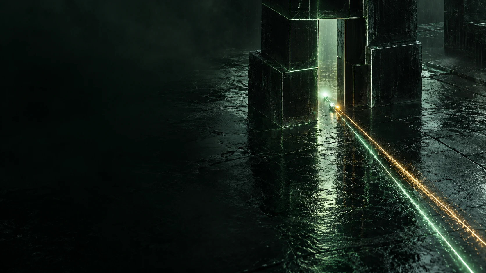

Twelve seconds at Makina
Loading the race…
The auction
How the bids for the next block moved
Every twelve seconds, block builders bid for the right to fill the next block, and the proposer picks one. Here is every bid for block 24,273,362, in ETH, against the clock.
The window
What had to happen between the two blocks
The contract was public the moment its block landed. The next block is stamped 12 seconds later. To get the money first, any bot had to do four things before then, or very soon after.
- 1
See it
Notice a brand new contract in the latest block and decide it is worth a look.
- 2
Simulate it
Run its plan against the current state of the chain and learn that it pays out over a thousand ETH.
- 3
Rewrite the beneficiary
The attacker's contract was built to pay out to the attacker, so the same calls had to be rebuilt to pay a new address.
- 4
Bid
Send the bundle to builders with a payment big enough to sit at position 0, before the bids close.
These are the steps the situation required of anyone, read from the public record. How this searcher actually did them is not visible on chain.
The block
Position 0
Block 24,273,362 holds 105 transactions. The copy is the first; the builder's payment to the proposer is the last.
The money
Where the 1,299 ETH went
The bot kept almost nothing. Nearly all of it went to the block builder as the price of going first, and most of that came back to Makina two days later.
In the end
After the block
2021 to 2026
Other races, same picture
The same visual for other races: bids for the bot's block on a linear scale (or, before relays existed, the order inside the block), and the whole money split.
All races, including the ones that do not count as a bot beating a hacker, are in the race table.
How we know
The copy. The attacker never sent a call, so there is no attack transaction to compare with. Instead, most of the bot's non-zero calldata bytes appear verbatim in the attacker's contract code.
The bids. Relays publish the value and timing of builder bids, not their contents. The winning block is the one with the copy in it; which other bids also carried the copy cannot be seen.
The mempool. The public mempool archive covers that day but has neither the deploy nor the copy, so neither was broadcast publicly before landing, or every archive source missed them.
Full detail, every transaction and the saved responses: the Makina race page and the methods.